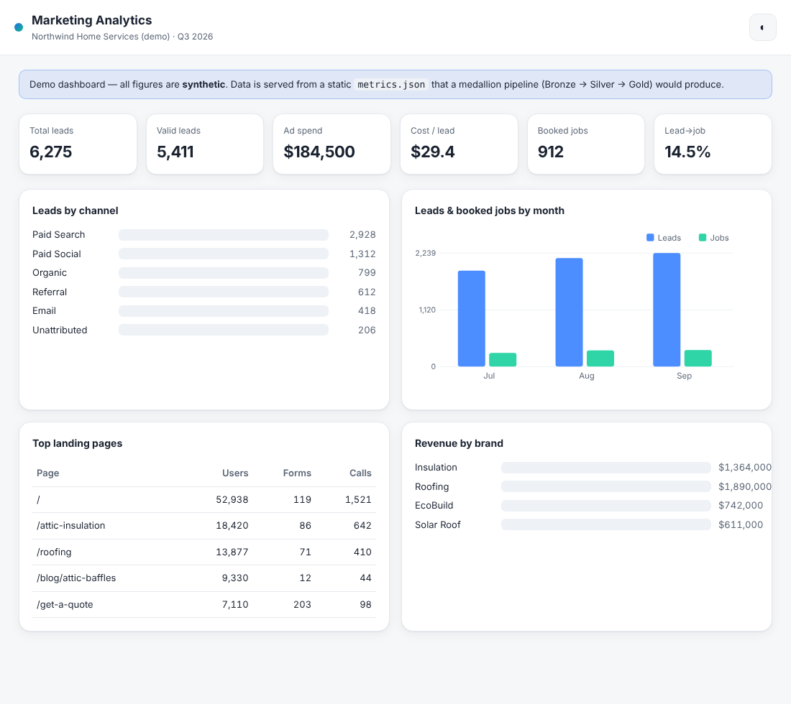
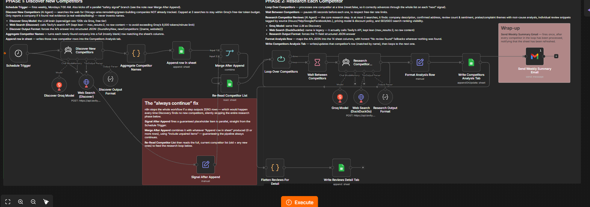
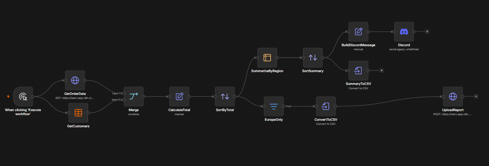

Data Engineer · AI Engineer
I design data pipelines, automations, and dashboards that turn messy source data into reliable reporting.
Hands-on with n8n, APIs and webhooks, AI model integration, and a medallion (Bronze → Silver → Gold) approach to data — deployed on Cloudflare Workers, D1, and R2.
I work at the intersection of marketing operations and data engineering: connecting ad platforms, CRMs, and web analytics into automated pipelines, then modeling the output into clean marts that dashboards and teams can trust. I care about idempotent, auditable data flows and about removing repetitive manual work with automation and AI.
n8n workflows, API & webhook integrations, conditional logic, scheduling, deployment, and troubleshooting.
Medallion (Bronze/Silver/Gold) design, SQL transforms, de-duplication, and data-quality reconciliation.
Cloudflare Workers, D1 (SQLite), R2 object storage, cron triggers, DNS, and access controls.
GA4, Meta Ads, HubSpot reporting; AI-assisted summarization and development with Claude, ChatGPT, and the OpenAI API.

An end-to-end Bronze → Silver → Gold pipeline: pluggable extractors land raw data in R2, SQL conforms it into a D1 warehouse, and Gold views expose clean marts for reporting. Serverless, scheduled, and idempotent.


Workflow automations built in n8n: a two-agent AI competitive-intelligence pipeline (discover competitors → research reviews, pricing & ranking → Google Sheets, on free Groq + Tavily), and an order-reporting pipeline (fetch → merge → summarize → CSV/Discord/upload). Importable JSON with write-ups.